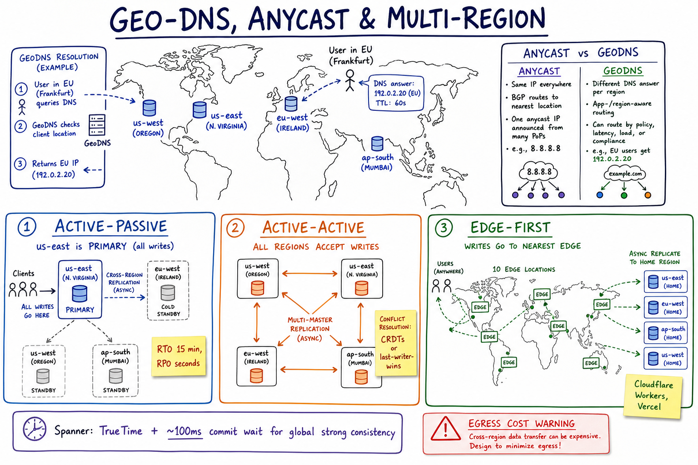

Geo, Anycast & Multi-Region // Concept
How to route global users to nearby capacity, survive a regional outage, and respect data-sovereignty law — while paying the cross-region latency and egress bill honestly.

World map: GeoDNS resolves EU user to EU IP; anycast vs GeoDNS comparison; three topologies side-by-side (active-passive, active-active, edge-first); Spanner TrueTime; egress cost warning.
01 — The Problem
- Latency: a user in Mumbai talking to us-east-1 pays ~250ms RTT before app work starts. Mobile commerce loses 7% conversion per 100ms.
- Disaster recovery: a region can die (US-EAST-1 has had memorable bad days). The business needs to survive it.
- Data sovereignty: GDPR / India DPDP / China PIPL require certain data to stay in-region.
The honest framing: strong consistency × low latency × multi-region = pick two (PACELC). Most systems pick the AP corner with smart conflict resolution.
02 — Core Vocabulary
| Term | Meaning |
|---|---|
| Region | Geographic location (us-east-1, eu-west-1) of multiple AZs. |
| AZ | Availability zone — isolated DC within a region (~1ms apart). |
| Anycast | Same IP announced from many PoPs; BGP routes packet to topologically nearest. |
| GeoDNS | DNS server returns different A/AAAA records per resolver location. |
| RTO | Recovery Time Objective — max acceptable downtime in a disaster. |
| RPO | Recovery Point Objective — max acceptable data loss (in time). |
| Active-Passive | One region serves; another is warm standby with replication. |
| Active-Active | Multiple regions accept writes; conflict resolution needed. |
| Multi-Master | Several primaries; writes converge via replication + resolver. |
| CRDT | Conflict-free Replicated Data Type — data structure that merges any two states deterministically. |
| Edge | Smaller PoPs at hundreds of locations (Cloudflare, Vercel) for compute closer to user. |
03 — Anycast vs GeoDNS
| Anycast | GeoDNS | |
|---|---|---|
| Mechanism | Same IP announced from many PoPs via BGP | DNS resolver returns different IPs per region |
| Routing decided at | Network layer (BGP) | DNS resolution time |
| Failover time | Seconds (BGP withdraw) | DNS TTL (~60s typical) |
| Granularity | BGP-router-level | Per resolver IP / EDNS Client Subnet |
| Best for | UDP (DNS), short stateless HTTPS (CDN edges) | App routing, long sessions, regional sticky |
| Examples | 8.8.8.8, 1.1.1.1, Cloudflare, AWS Global Accelerator | Route53 geolocation, NS1, Akamai GTM |
Anycast doesn't care which DC the user "thinks" is closest — it follows whatever BGP says is shortest path. GeoDNS gives you policy ("EU users must go to EU region"). Real systems use both: anycast IP gets to the nearest edge PoP, which then chooses the right backend region.
04 — Topologies
| Topology | How | RTO / RPO | When |
|---|---|---|---|
| Single region + CDN | All app + DB in one region; CDN edges serve static + cached | Hours / hours | Day 1 startups, low-stakes apps |
| Active-Passive | Primary region; warm standby with async replication; failover via DNS or anycast | ~15 min / seconds | Most enterprise apps; cheap insurance |
| Active-Active | All regions serve reads + writes; multi-master DB or CRDT-based | Seconds / 0 | Global consumer apps, true 24×7 |
| Edge-first | Compute + state at hundreds of edge PoPs; async replicate to home region | Seconds / seconds | Latency-critical reads (auth, feature flags, KV) |
The single biggest mistake teams make: skipping straight from "single region" to "active-active". Active-passive solves 80% of the actual business risk for 20% of the engineering effort.
05 — Cross-Region Replication
Latency budget between regions (typical): us-east-1 <-> us-west-2 ~60-80 ms RTT us-east-1 <-> eu-west-1 ~80-100 ms RTT us-east-1 <-> ap-south-1 ~180-220 ms RTT eu-west-1 <-> ap-south-1 ~120-150 ms RTT Synchronous cross-region replication adds 1 round trip to every write. Acceptable only for tiny, infrequent, business-critical writes (payment commit). For everything else: async with bounded lag.
| Mode | Trade-off |
|---|---|
| Async | RPO = replication lag (seconds typical). Data loss on primary crash. Standard. |
| Semi-sync | Wait for at least one remote replica to ack. RPO ≈ 0 but write latency spikes. |
| Sync (Paxos/Raft across regions) | Spanner-style; commit waits for majority of regions. ~100ms p99 floor. |
06 — Strong Consistency Across Regions
The hard truth: in-region strong consistency is solved (Raft/Paxos within a few ms). Global strong consistency requires either accepting commit latency (Spanner: ~100ms p99 via TrueTime commit-wait) or giving up writes in some regions.
Google Spanner approach: GPS + atomic clocks per DC give bounded clock skew ε (~1-7ms) TrueTime API returns [t.earliest, t.latest] Commit timestamp = t.latest; wait until t.earliest > t.latest of prior tx -> external consistency (linearizability) globally -> trade-off: every commit waits ~5-10ms baseline
See Time in Distributed Systems for clock primitives.
CockroachDB and YugabyteDB do similar things without GPS clocks, using HLC.
07 — CRDTs & Multi-Master
If you accept eventual consistency, CRDTs make multi-master tractable: any two replicas can independently apply ops and converge to the same state.
| CRDT type | Example use |
|---|---|
| G-Counter, PN-Counter | View counters, likes |
| OR-Set, LWW-Element-Set | Shopping cart contents, tags |
| LWW-Register | User profile fields |
| RGA / Yjs / Automerge | Collaborative text (Google Docs-like) |
Riak, Redis (CRDB in Redis Enterprise), DynamoDB Global Tables (LWW), CouchDB are CRDT-flavored multi-master systems.
08 — Data Sovereignty
- GDPR: EU personal data should stay in EU (technically: cross-border transfer requires adequacy or SCCs)
- India DPDP, China PIPL, Russia 152-FZ all impose data-residency requirements
- HIPAA / PCI / FedRAMP have their own residency + handling rules
Architectural answers
- Per-tenant region pinning — route a tenant's traffic + data to their region; never replicate user data cross-region
- Per-record region tag — finer-grained, harder to enforce
- Encrypt with region-local KMS — even if bytes leak, keys can't
Storage primitive: shard by (region, tenant_id); the routing layer (gateway, gateway-edge) enforces "EU users only hit EU shards".
09 — Failover & Game Days
Game day: regularly (quarterly) kill the primary region in a controlled exercise. The failover plan that's never tested doesn't exist. Chaos engineering (Netflix Simian Army) is this idea operationalised.
10 — The Cost: Egress
Cloud egress pricing (typical, 2026): intra-AZ $0.01 / GB inter-AZ within region $0.01 / GB inter-region within continent $0.02 / GB inter-continent $0.08 / GB out to public internet $0.05 - $0.09 / GB 10 TB / day of cross-region replication = 300 TB / month = ~$6-24k / month just for the bytes moving. DESIGN CHOICES: - Replicate only what you must (delta + compaction) - Co-locate caller + callee in the same region - Use VPC endpoints / PrivateLink (lower rate) - Avoid "chatty" RPCs cross-region (batch them)
11 — Where It Shows Up
| System | Angle |
|---|---|
| Uber / Ride Hailing | Regional sharding by city; trip data stays local |
| FB Live Comments | Regional brokers; cross-region fanout for global threads |
| Payment System | Regional ledger primaries; cross-region async for reconciliation |
| Twitter Timeline | Active-active read-heavy; multi-region cache |
| CDN | Anycast + cache at edge |
| Time | Cross-region linearizability requires TrueTime / HLC |
| Consistency Models | PACELC ELC trade-off |
12 — Pitfalls
- Auto-failover on flaky health checks — flips back and forth; promote requires human confirmation for non-trivial failover.
- Split brain — if a partition (not outage) caused failover, two regions both think they're primary. Fence the old primary first.
- DNS TTL too high — failover takes 60+ minutes for ISPs that ignore short TTL.
- Untested failover — first real DR is during the actual outage. Game day quarterly.
- Forgetting egress — the cloud bill is 3× what was estimated.
- Cross-region chatty RPCs — each hop is 80ms; 5 hops = 400ms p99 baseline.
- Stateful sessions pinned to dying region — use stateless tokens or replicated session store.
- Assuming "active-active" without a conflict-resolution story — last-writer-wins drops data silently.
13 — Interview Q&A
Anycast vs GeoDNS — when each?
Walk me through active-passive vs active-active.
Can you have strong consistency across regions?
How would you implement GDPR data residency?
(region, tenant_id) with the region tag baked into the user record at sign-up. Gateway / API layer enforces routing: EU users always hit EU shards. Replication is intra-region; cross-region only for aggregated, anonymized analytics. Use region-local KMS so bytes can't be decrypted elsewhere even if they leak. Audit every cross-region access.What's a CRDT and when would you use one?
How does cross-region failover work?
What's RTO vs RPO?
What is anycast actually doing at the network layer?
How do you handle session stickiness across regions?
Why is egress cost a design constraint?
SDE-2 vs SDE-3 differentiator?
| SDE-2 | SDE-3 |
|---|---|
| "Use multi-AZ, multi-region for HA" | + anycast vs GeoDNS choice, RTO/RPO budgets, active-passive vs active-active economics, Spanner TrueTime explained, CRDT options, GDPR / data-sovereignty enforcement, egress cost math, game-day testing, split-brain fencing, edge-first architectures |